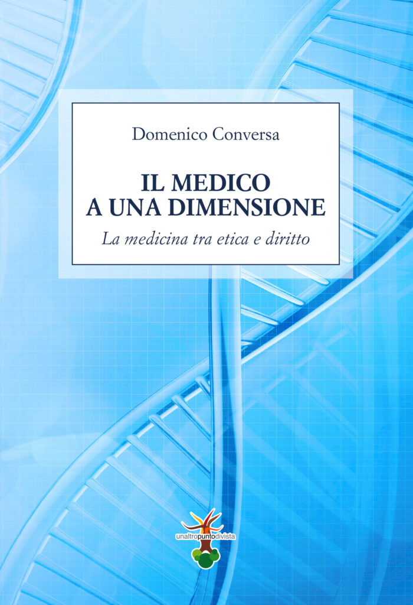
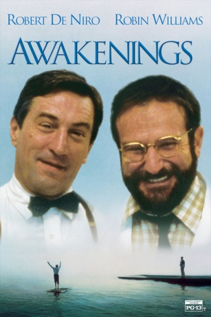
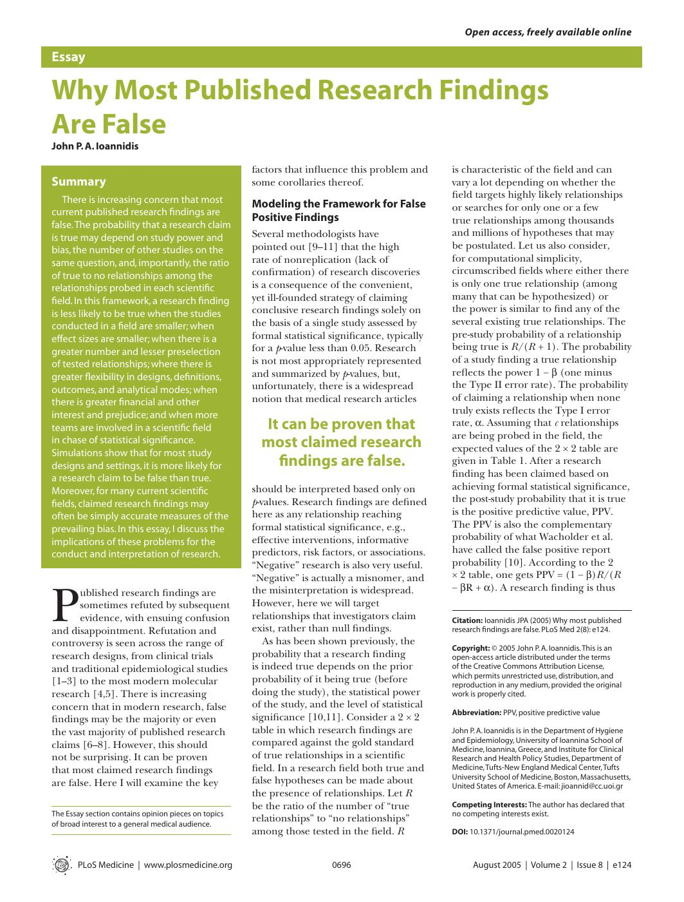

54:32 · 10 OPERE
Appunti su: "Il medico a una dimensione", diDomenico Conversa.
Il filo del discorso
Una recensione di Il medico a una dimensione diventa una discussione sul significato della cura. Il relatore presenta Domenico Conversa come un giurista che interroga il rapporto fra paziente, professione medica e diritto, partendo anche dall’esperienza della malattia. La domanda centrale riguarda la persona che rischia di scomparire dietro l’organo da riparare, il protocollo da applicare e la procedura amministrativa. Il collegamento con Marcuse serve a chiamare in causa una razionalità che riduce i fini della vita alla sola efficienza dei propri strumenti. Il percorso attraversa autonomia, conoscenza scientifica e metafisica. Dr Divago sostiene che il sapere teorico non coincida con un semplice accumulo di osservazioni e contesta l’idea che la spiegazione meccanica esaurisca l’essere umano. La lettura dei passi di Conversa è alternata a digressioni personali sulla matematica, sul linguaggio della fisica e sui diversi ideali di umanità. Il recupero della persona, in questa prospettiva, richiede anche di domandarsi quale vita si voglia proteggere e quale libertà resti a chi viene curato. La parte sulla ricerca biomedica accosta la critica della burocrazia sanitaria, il commento di Richard Horton sulla riproducibilità, Risvegli di Sacks e il suo adattamento cinematografico, l’indagine di Jennifer Washburn sull’università e il saggio metodologico di Ioannidis. Il relatore li utilizza contro la trasformazione dell’autorità scientifica in dogma. La scheda conserva la distinzione fra problemi reali di qualità della ricerca, affermazioni polemiche del contributo e dimostrazioni riferite a singoli trattamenti: una critica generale non certifica l’inefficacia di ogni cura. La conclusione porta il discorso sul terreno giuridico e politico. Il principio della persona come fine viene contrapposto a una gestione puramente collettiva dei corpi; il richiamo a Blackstone introduce il problema del danno imposto a un innocente per un vantaggio generale. Sono argomentazioni del relatore, da distinguere dalla disciplina costituzionale dei trattamenti obbligatori e dalla valutazione concreta dei rischi. La chiusa torna al limite, alla mortalità e alla ricerca di senso, contrapponendo una vita orientata a verità e bellezza al consumo di un presente senza memoria.
I libri nel discorso

Il medico a una dimensione. La medicina tra etica e diritto
Copertina: Un Altro Punto di Vista, 2020. Copertina autentica fornita nel sito dell’autore: titolo, sottotitolo, autore e marchio unaltropuntodivista riscontrati. Il nome della cartella web 2018 non è assunto come anno di pubblicazione. Non si attribuiscono un numero di pagine o un ISBN senza riscontro sufficiente.
Immagine autentica dell’opera, controllata visivamente; l’edizione di riferimento non è attribuita al filmato.
Titolo, autore e sottotitolo del volume discusso; anno2020nel contributo.
Passaggio 0:00 ↗ · Fonti e libro ↗
L’uomo a una dimensione
Copertina: Einaudi, Piccola Biblioteca Einaudi, 1999
Copertina di un’edizione bibliografica dell’opera, con introduzione di Luciano Gallino. La citazione nel video resta probabile; questa edizione non vi è confermata.
Titolo di Marcuse esplicitamente richiamato come precedente del libro.
Passaggio 16:25 ↗ · Fonti e libro ↗Metafisiche del mondo
Copertina: Copertina riprodotta nella recensione di Domenico Conversa
Il relatore richiama il proprio volume e ricorda il 1997. Il titolo al plurale è riscontrato nella bibliografia dell’autore. Il riferimento proviene dalla trascrizione automatica e non è confermato all’ascolto.
Passaggio 22:33 ↗ · Fonti e libro ↗
Bibbia
Identificazione probabile
Copertina: San Paolo, 2014 · Nuova Versione dai Testi Antichi · edizione di riferimento
Medico, cura te stesso: probabile riferimento al proverbio citato in Luca4:23.
Passaggio 32:26 ↗ · Fonti e libro ↗Offline: What is medicine’s 5 sigma?
Identificazione probabile
Intestazione limitata dell’articolo a p. 1380 di The Lancet, vol. 385, n. 9976, 11 aprile 2015; non copertina del fascicolo e non pagina integrale. Solo rubrica Comment e titolo, senza corpo del testo o fotografie.: The Lancet 385 (9976), 11 aprile 2015, p. 1380 — intestazione limitata dell’articolo
Intestazione limitata dell’articolo a p. 1380 di The Lancet, vol. 385, n. 9976, 11 aprile 2015; non copertina del fascicolo e non pagina integrale. Solo rubrica Comment e titolo, senza corpo del testo o fotografie.
Segmenti trascrizione automatica 265–270: il tema dell’attendibilità è introdotto a 1993.24 s; a 2006.24 s viene richiamato un articolo del 2015 e a 2013.82 s The Lancet, seguito da una parafrasi del passo riconoscibile di Horton. Nome dell’autore e titolo completo non pronunciati.
Passaggio 33:26 ↗ · Fonti e libro ↗Risvegli (Awakenings)
Copertina: Originale Awakenings, 1973. Prima traduzione italiana di Andrea Salmaggi, 1987; nuova edizione ampliata nel 1991 con le parti aggiunte tradotte da Isabella Blum. Copertina gli Adelphi 79, prima edizione nella collana 1995, 560 pagine e sei tavole, ISBN 9788845911477. La tiratura dell’immagine attuale non è attribuita al video.
Immagine autentica dell’opera, controllata visivamente; l’edizione di riferimento non è attribuita al filmato.
Risvegli di Oliver Sacks è nominato; distinto dal successivo racconto della scena cinematografica.
Passaggio 35:04 ↗ · Fonti e libro ↗
Risvegli (Awakenings, film)
Identificazione probabile
Immagine promozionale ufficiale · Awakenings, 1990: Film Columbia Pictures del 1990, con Robin Williams nel ruolo di Malcolm Sayer e Robert De Niro in quello di Leonard Lowe, tratto dal libro di Oliver Sacks. Immagine promozionale autentica Sony, non copertina del libro né fotografia documentaria del medico.
Materiale promozionale Sony: gli interpreti rappresentano personaggi del film, non sono ritratti storici di Sacks e del suo paziente.
Il colloquio sui lombrichi e sulla mielina corrisponde alla scena7della sceneggiatura di Steven Zaillian.
Passaggio 35:04 ↗ · Fonti e libro ↗
University, Inc.: The Corporate Corruption of Higher Education
Copertina: Basic Books, brossura del 22 agosto 2006, ISBN 9780465090525, con una nuova introduzione dell’autrice. Prima edizione del 2005; il catalogo Wellcome registra il sottotitolo The Corporate Corruption of American Higher Education.
Immagine autentica dell’opera, controllata visivamente; l’edizione di riferimento non è attribuita al filmato.
University, Inc. è indicato come libro sui rapporti fra università e impresa.
Passaggio 36:23 ↗ · Fonti e libro ↗
Why Most Published Research Findings Are False
Prima pagina dell’articolo · PLOS Medicine, 2005: PLOS Medicine 2(8), e124, 30 agosto 2005, pp. 696–701, DOI 10.1371/journal.pmed.0020124. Immagine della prima pagina autentica, non copertina di un libro. © 2005 John P. A. Ioannidis, distribuita con licenza Creative Commons Attribution; documento di sei pagine letto integralmente.
Prima pagina dell’articolo originale PLOS, con titolo, autore, riferimenti e licenza.
Ioannidis, PLOSMedicine e il problema dei risultati falsi: titolo completo e anno2005riscontrati.
Passaggio 37:08 ↗ · Fonti e libro ↗Dove si nasconde la salute
Copertina: Raffaello Cortina, gennaio 1994, 208 pagine, ISBN 9788870782899. Originale tedesco Über die Verborgenheit der Gesundheit, 1993; il titolo inglese The Enigma of Health spiega la variante pronunciata, senza farne un distinto libro italiano.
Copertina autentica Cortina vista integralmente: fondo grigio, Hans-Georg Gadamer e Dove si nasconde la salute in alto, figura della Venere botticelliana in basso a destra, marchio editoriale sul lato sinistro.
Dove si nasconde la salute e Gadamer nominati nella discussione sulla autorità dell’esperto.
Passaggio 39:05 ↗ · Fonti e libro ↗